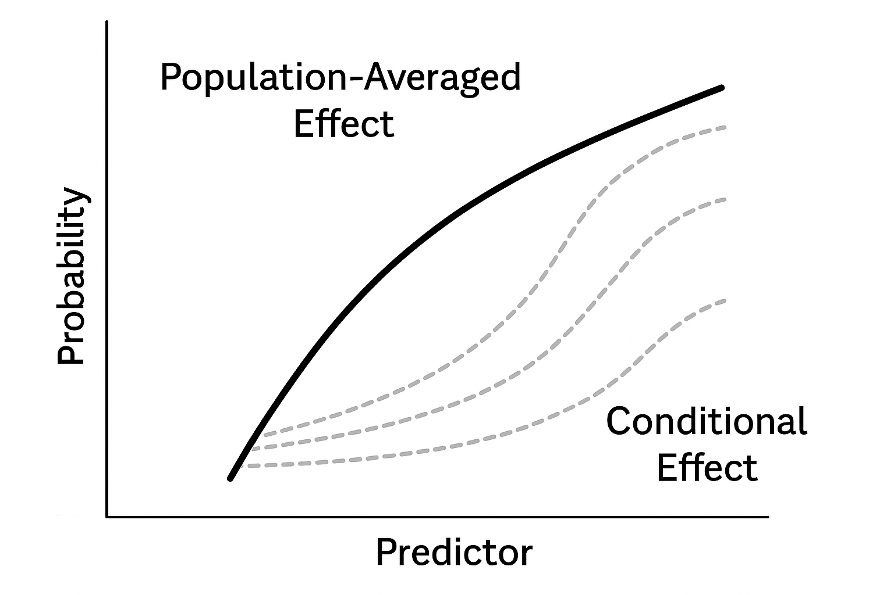

In many real-world datasets, observations are non-normal and not independent. For example:
Repeated measurements on the same subject.
Clusters of data within counties, hospitals, or schools.
Panel data where observations are grouped by time or region.
Why can’t we use standard GLMs?
A standard GLM assumes independent observations. When data are clustered, this assumption is violated, leading to biased standard errors and incorrect inference.
To address this, Generalized Linear Mixed Models (GLMMs) extend GLMs by including random effects that account for within-group correlation and unobserved heterogeneity.
Essentially we are combining methods learned in Modules 1 and 2.
Motivating Example: Crossover Design
We consider a crossover trial on cerebrovascular deficiency:
Data were obtained from a crossover trial on the disease of cerebrovascular deficiency. The goal is to investigate the side effects of a treatment drug compared to a placebo
Design:
34 patients: an active drug (A) and followed by placebo (B).
33 patients: a placebo (B) followed by an active drug (A).
Outcome: a normal (0) or abnormal (1) electrodiagram.
Each patient has a binary observation at period 1 and period 2.
Crossover design: can have “carryover” effects which confound treatment effect estimation. Test whether washout period was adequate.
The parameter \(\beta_1\) represents the log-odds difference in the probability of having an abnormal ECG response between the active drug (trt = 1) and placebo (trt = 0), holding other variables (such as period) constant.
\(\exp(\beta_1)\) is the odds ratio of an abnormal ECG response for patients on the active drug compared to those on placebo.
If \(\beta_1 > 0\), the active drug is associated with higher odds of abnormal ECG.
If \(\beta_1 < 0\), the active drug is associated with lower odds of abnormal ECG.
What is the interpretation of \(\beta_2\)?
The parameter \(\beta_2\) captures the effect of the study period on the log-odds of an abnormal ECG response, independent of treatment. Specifically, \(\beta_2\) represents the change in log-odds of an abnormal ECG when moving from period 1 (period = 0) to period 2 (period = 1), holding treatment (trt) constant.
\(\exp(\beta_2)\) is the odds ratio of an abnormal ECG in period 2 compared to period 1, after adjusting for treatment.
A significant \(\beta_2\) may indicate period effects (e.g., differences due to time, learning effects, or insufficient washout).
What is the interpretation of \(\beta_3\)?
The parameter \(\beta_3\) represents the interaction between treatment and period. It measures how the treatment effect (the difference in log-odds between active drug and placebo) changes from period 1 to period 2.
If \(\beta_3 = 0\), it means the treatment effect is consistent across periods.
If \(\beta_3 \neq 0\), it suggests the treatment effect differs between the two periods, which could indicate a carryover effect (e.g., residual impact of the drug from the previous period).
\(\exp(\beta_3)\) quantifies how the odds ratio for treatment vs. placebo changes in period 2 relative to period 1.
fit_model1 <-glm(formula = outcome ~1+ trt ,family =binomial(link ="logit"),data = data)fit_model2 <-glm(formula = outcome ~1+ trt + period ,family =binomial(link ="logit"),data = data)fit_model3 <-glm(formula = outcome ~1+ trt + period + trt*period,family =binomial(link ="logit"),data = data)# summary(fit_model1)# # summary(fit_model2)# # summary(fit_model3)
Covariate
Model 1
Model 2
Model 3
Intercept \(\beta_0\)
-1.08 (0.28)
-1.22 (0.34)
-1.54 (0.45)
Treatment \(\beta_1\)
0.56 (0.38)
0.56 (0.38)
1.11 (0.57)
Period \(\beta_2\)
0.27 (0.38)
0.85 (0.58)
Trt \(\times\) Period \(\beta_3\)
-1.02 (0.77)
We compared models to check for period \(\beta_2\) and carryover \(\beta_3\) effects.
Ignoring period effects (Model 1) biases treatment effect \(\beta_1\).
Model 3: after controlling for period and carryover effects, the estimated OR of abnormal ECG in period 1 was \(3.03 = e^{1.11}\) and p-value = 0.053. The 95% confidence interval is
At \(\alpha = 0.05\), we fail to reject the null hypothesis that the treatment in period has an impact on the probability of an abnormal ECG. However, future research is needed since the p-value is 0.053.
\(\beta_3\) is negative - the second period effect is smaller for those who received active drug during the second period; however, not significant. This confirms no strong carryover effect.
Calculating Predicted Probabilities
Using the estimates from Model 3, we can calculate predicted probabilities for each treatment/period combination:
This is review from Module 2. We can compare models using the LRT and AIC metrics. Here we want to compare the three nested models
Nested Models:
Models are nested when the simpler model (reduced) can be obtained by setting one or more parameters of the larger model (full) to zero. Example: Model 1 (treatment only) ⊂ Model 2 (treatment + period) ⊂ Model 3 (treatment + period + interaction).
Under \(H_0\), \(\lambda_{LR} \sim \chi^2_{df}\), where \(df = p_{full} - p_{reduced}\).
In R: In this example, we will compare model fits 1 and 2.
fit_reduced <- fit_model1fit_full <- fit_model2anova(fit_reduced, fit_full, test ="LRT")
Analysis of Deviance Table
Model 1: outcome ~ 1 + trt
Model 2: outcome ~ 1 + trt + period
Resid. Df Resid. Dev Df Deviance Pr(>Chi)
1 132 164.42
2 131 163.89 1 0.53169 0.4659
A significant LRT p-value means the additional variable(s) improve model fit. In our results, we show there is not a significant difference between models 1 and 2.
Information Criteria (AIC/BIC):
AIC:
\[
AIC = -2 \, l(\hat{\beta}) + 2p,
\] where \(p\) is the number of parameters. Lower AIC indicates better fit.
- Use AIC/BIC penalizes models with larger number of parameters by \(2p\), so it tests whether added complexity is warranted.
AIC(fit_model1)
[1] 168.418
AIC(fit_model2)
[1] 169.8863
AIC(fit_model3)
[1] 170.0983
A difference of 2+ in AIC is often considered meaningful.
The lowest AIC comes from model 1 (but it is only slightly lower) meaning the three models perform similarly. There is really nothing gained in models 2 and 3.
What’s wrong with this model???
It assumes observations are independent, but they are not.
The product of the individual likelihoods implies the independence assumption, i.e., the product treats clustered observations in the same way as different participants.
The Better Approach: Generalized Linear Mixed Model
A Generalized Linear Mixed Model (GLMM) is an extension of GLM that allows for both fixed and random effects. It is used when data are not normal and are not independent. Main components of GLMMs:
A GLM structure: Response variable \(y_{ij}\) from the exponential family with link function \(g(\cdot)\).
Random effects: Group-specific terms (e.g., intercepts or slopes) to capture within-group variability. Account for correlation or heterogenity within groups.
Fixed effects: Population level parameters that apply to all observations.
For clustered data with groups \(i = 1, \dots, n\) and observations \(j = 1, \dots, r_i\):
\(g()\) is the link function that connects the mean of the response variable to the linear predictor.
\(\beta_0\) is the overall intercept (fixed effect).
\(x_{ij}\) is a vector of covariates.
\(\beta\) is the vector of fixed effects (population-level effects).
\(\theta_i \sim N(0, \tau^2)\) is a random intercept for group \(i\).
\(\tau^2\) captures between-group variance.
Likelihood in GLMM Estimation
Let \(\mathbf{y}\) be all the data and \(\mathbf{\theta}\) the vector of all random effects. So there are two levels of randomness. We can define the joint distribution \([\mathbf{y}, \mathbf{\theta}]\):
where \(n=\) total number of subjects (groups) and \(r_i\) number of observations within each subject/group.
The \(y_{ij}\) are conditionally independent given the random effects. This is a critical assumption that clusters are independent from each other if we fix random effects.
We define the likelihood for the fixed parameters. Integrating each \(\theta_i\), the likelihood is:
Generalized linear mixed model fit by maximum likelihood (Adaptive
Gauss-Hermite Quadrature, nAGQ = 100) [glmerMod]
Family: binomial ( logit )
Formula: outcome ~ trt * period + (1 | ID)
Data: data
AIC BIC logLik deviance df.resid
145.1 159.6 -67.5 135.1 129
Scaled residuals:
Min 1Q Median 3Q Max
-1.1386 -0.2151 -0.1470 0.2447 1.3143
Random effects:
Groups Name Variance Std.Dev.
ID (Intercept) 24.15 4.915
Number of obs: 134, groups: ID, 67
Fixed effects:
Estimate Std. Error z value Pr(>|z|)
(Intercept) -4.981 2.116 -2.354 0.0186 *
trt 3.578 2.107 1.698 0.0895 .
period 2.772 2.015 1.376 0.1689
trt:period -3.319 3.270 -1.015 0.3100
---
Signif. codes: 0 '***' 0.001 '**' 0.01 '*' 0.05 '.' 0.1 ' ' 1
Correlation of Fixed Effects:
(Intr) trt period
trt -0.827
period -0.787 0.899
trt:period 0.655 -0.901 -0.915
Interpretation:
Covariate
GLM
GLMM
Intercept \(\beta_0\)
-1.54 (0.45)
-4.98 (2.12)
Treatment \(\beta_1\)
1.11 (0.57)
3.58 (2.11)
Period \(\beta_2\)
0.85 (0.58)
2.78 (2.02)
Trt \(\times\) Period \(\beta_3\)
-1.02 (0.77)
-3.32 (3.27)
\(\tau^2\)
—
\(24.15\)
The point estimates from the random intercept model (GLMM) are larger, but their standard errors also increased, so inference on direction and significance remains the same.
The baseline (period 1, placebo) log-odds across subjects has:
A population mean of \(-4.98\),
A standard deviation of \(4.92\).
The middle 95% of subjects have baseline log-odds between: \[
-4.98 \pm 1.96 \times 4.92 = (-14.62, \, 4.66),
\] which corresponds to baseline probabilities of approximately \((4 \times 10^{-7}, \, 0.99)\) — indicating very large between-subject heterogeneity!
Population versus Conditional Interpretations

Differences between population vs individual trajectories
In a GLM, we estimate the marginal model, where random effects are integrated out or assumed zero:
\[
g(E[y_{ij}]) = \beta X_{ij},
\] which is interpreted as the population-averaged effect or marginal effect. In contrast, a GLMM estimates the slopes conditional on random effects:
where \(\theta_i\) accounts for subject-specific deviations. These are known as conditional effects. Because GLMs assume independence, they can underestimate standard errors when clustering is ignored.
To clarify the difference, consider the subject-specific (conditional) expectation and the population-averaged (marginal) expectation. For a given subject \(i\), the expected outcome at observation \(j\) is
where \(g^{-1}\) is the inverse link function, \(\beta_0 + \theta_i\) represents the subject-specific intercept, and the \(\beta x_{ijk}\) terms are fixed effects. This expression defines an individual trajectory, capturing how each subject deviates from the population mean.
The population-averaged mean is obtained by integrating over the distribution of random effects:
For non-linear link functions such as the logit, this is not equal to simply applying \(g^{-1}\) to the fixed-effect part:
\[
E[g^{-1}(z)] \neq g^{-1}(E[z]). \]
This explains why the population-averaged curve (the black line in the figure) does not match the mean of the subject-specific curves. The non-linearity of \(g^{-1}\) causes averaging across individual probabilities to produce a curve with a different shape. Thus, GLMs and GLMMs provide fundamentally different interpretations of the coefficients \(\beta\).
Poisson Regression
The Poisson model is used for count data, where each observation \(y_i\) can take non-negative integer values \(0, 1, 2, \dots\):
As with linear and logistic regression, the mean of \(y\) is related to covariates through a linear predictor:
\[
\theta_i = \exp(X_i \beta).
\]
The canonical link function is the log link:
\[
g(\theta_i) = \log(\theta_i),
\]
which maps \((0, \infty) \rightarrow (-\infty, \infty)\) and ensures predicted counts are positive.
Reminder: Differences from the Binomial Model
Binomial/logistic regression is used when \(y_i\) represents the number of “successes” out of \(n_i\) trials (bounded count data).
Poisson regression is used when \(y_i\) is an unbounded count (e.g., number of events over time or space) and not based on a fixed number of trials. Commonly used to model rates
where \(\theta_s \sim N(0, \tau^2)\) represents county-level random intercepts, and logpop is included as an offset to model lung cancer death rates rather than raw counts.
county sex race year death pop
1 1 1 1 1 6 8912
2 1 1 1 2 5 9139
3 1 1 1 3 8 9455
4 1 1 1 4 5 9876
5 1 1 1 5 8 10281
6 1 1 1 6 5 10876
# Create offset for population at riskcancer$logpop <-log(cancer$pop)# Fit random-intercept Poisson modelfit_poisson <-glmer( death ~offset(logpop) +factor(sex) +factor(race) + year + (1| county),family = poisson,data = cancer)
Warning in checkConv(attr(opt, "derivs"), opt$par, ctrl = control$checkConv, : Model is nearly unidentifiable: very large eigenvalue
- Rescale variables?
summary(fit_poisson)
Generalized linear mixed model fit by maximum likelihood (Laplace
Approximation) [glmerMod]
Family: poisson ( log )
Formula: death ~ offset(logpop) + factor(sex) + factor(race) + year +
(1 | county)
Data: cancer
AIC BIC logLik deviance df.resid
26905.9 26940.4 -13447.9 26895.9 7387
Scaled residuals:
Min 1Q Median 3Q Max
-6.6678 -0.5699 -0.2176 0.3900 10.5059
Random effects:
Groups Name Variance Std.Dev.
county (Intercept) 0.0416 0.204
Number of obs: 7392, groups: county, 88
Fixed effects:
Estimate Std. Error z value Pr(>|z|)
(Intercept) -7.7949302 0.0234154 -332.90 < 2e-16 ***
factor(sex)2 -1.1021170 0.0070715 -155.85 < 2e-16 ***
factor(race)2 -0.0474948 0.0103257 -4.60 4.23e-06 ***
year 0.0366854 0.0005224 70.22 < 2e-16 ***
---
Signif. codes: 0 '***' 0.001 '**' 0.01 '*' 0.05 '.' 0.1 ' ' 1
Correlation of Fixed Effects:
(Intr) fctr(s)2 fctr(r)2
factor(sx)2 -0.077
factor(rc)2 -0.005 -0.005
year -0.278 -0.002 -0.036
optimizer (Nelder_Mead) convergence code: 0 (OK)
Model is nearly unidentifiable: very large eigenvalue
- Rescale variables?
The warning “Model is nearly unidentifiable: very large eigenvalue – Rescale variables?” indicates potential numerical instability due to variables on very different scales or high collinearity among predictors. Although the model converged, it is recommended to center or rescale continuous variables (e.g., year) to improve numerical conditioning and ensure stable parameter estimation.
Model Interpretations
Fixed Effects:
Intercept (\(\hat{\beta}_0 = -7.79\)):
This is the baseline log death rate for non-white males in the reference year, in an average county.
Converting to a rate: \[
\exp(-7.79) \approx 0.00041,
\] which is about 41 deaths per 100,000 people.
Sex (female) (\(\hat{\beta}_1 = -1.10\)):
Holding race, year, and county constant, females have 67% fewer deaths compared to males: \[
\exp(-1.10) \approx 0.33.
\]
Race (white) (\(\hat{\beta}_2 = -0.047\)):
White individuals have about 5% fewer deaths compared to non-white individuals: \[
\exp(-0.047) \approx 0.95.
\]
Year (\(\hat{\beta}_3 = 0.0367\)):
Each year is associated with a 3.7% increase in lung cancer death rates, holding all other variables constant: \[
\exp(0.0367) \approx 1.037.
\]
Random Effects:
County-level variation (\(\hat{\tau} = 0.204\)):
The standard deviation of county-specific deviations in log death rates is 0.204.
The middle 95% of counties have baseline log rates within: \[
-7.79 \pm 1.96 \cdot 0.204 = (-8.19, -7.39),
\] which corresponds to rates ranging from approximately 0.00027 to 0.00061 per person.
Overdispersion of the Poisson Assumption. rcolorize("SKIP", "RED")
In Poisson, the assumption \(E(y_i) = V(y_i)\) is often violated!
One can add an additional overdispersion parameter also called a scale parameter.
One can adjust the parameter variance by this scale parameter. This is called the quasi-poisson model.
Fitting a quasi-poisson in GLM. Note: glmer() does not support a quasipoisson family — quasi-likelihood does not extend cleanly to the numerical integration used to fit random effects — so the scale-parameter adjustment is illustrated below with a standard (non-mixed) Poisson GLM rather than a GLMM.
Call:
glm(formula = death ~ offset(logpop) + factor(sex) + factor(race) +
year, family = quasipoisson, data = cancer)
Coefficients:
Estimate Std. Error t value Pr(>|t|)
(Intercept) -7.6886326 0.0092386 -832.233 <2e-16 ***
factor(sex)2 -1.0983692 0.0087951 -124.885 <2e-16 ***
factor(race)2 0.0440971 0.0124503 3.542 4e-04 ***
year 0.0357040 0.0006493 54.987 <2e-16 ***
---
Signif. codes: 0 '***' 0.001 '**' 0.01 '*' 0.05 '.' 0.1 ' ' 1
(Dispersion parameter for quasipoisson family taken to be 1.546573)
Null deviance: 43628 on 7391 degrees of freedom
Residual deviance: 11323 on 7388 degrees of freedom
AIC: NA
Number of Fisher Scoring iterations: 4
Summary
Section
Description
What is the model?
A Generalized Linear Mixed Model (GLMM) extends GLMs by including random effects to account for correlations within clusters (e.g., subjects, counties). The general form is: \(g(E[y_{ij}|\theta_i]) = \beta_0 + x_{ij}'\beta + \theta_i\), where \(\theta_i \sim N(0, \tau^2)\).
Motivation
Standard GLMs assume independent observations. In real-world data, observations are often correlated (e.g., repeated measures, cluster data). Ignoring this leads to biased standard errors and invalid inference. GLMMs address this by modeling cluster-level variability.
Model Components
1. Random component: Distribution from the exponential family (e.g., Binomial, Poisson). 2. Systematic component: Linear predictor \(\eta_{ij} = \beta_0 + x_{ij}' \beta + \theta_i\). 3. Link function:\(g(\cdot)\) connects the mean response to the predictor.
Likelihood
The joint likelihood involves both fixed and random effects: \(L(\beta, \tau^2 | y) = \prod_i \int \left( \prod_j [y_{ij} | \theta_i] \right) [\theta_i] d\theta_i\). Because this integral is difficult to solve, numerical approximation (Laplace or adaptive quadrature) is used.
Interpretation
Fixed effects (\(\beta_j\)): Population-level effects. Random effects (\(\theta_i\)): Group-specific deviations. GLM vs. GLMM: GLMs provide population-averaged effects, while GLMMs provide conditional (subject-specific) effects.
Example: Crossover
Logistic GLMM with a random intercept: \(logit P(y_{ij}=1) = \beta_0 + \beta_1 \cdot \text{trt}_{ij} + \beta_2 \cdot \text{period}_{ij} + \beta_3 (\text{trt}\times \text{period})_{ij} + \theta_i\). Highlights how ignoring correlation biases treatment effects.
Model Comparisons
LRT: Compares nested models via \(\lambda_{LR} = -2 ( l_{reduced} - l_{full} ) \sim \chi^2_{df}\). AIC/BIC:\(AIC = -2 l(\hat{\beta}) + 2p\), lower values indicate better fit with complexity penalty.
Poisson Regression
For count data: \(y_i \sim \text{Poisson}(\lambda_i)\), with \(log(\lambda_i) = \beta_0 + x_i'\beta\). Offsets: Used to model rates: \(log E(y_i) = log(N_i) + x_i' \beta\). \(e^{\beta_j}\) = Incidence Rate Ratio (IRR), a multiplicative change in expected counts.
Ohio Cancer Example
Random-intercept Poisson GLMM: \(log E(death_{stk} | \theta_s) = \beta_0 + \beta_1 \text{sex} + \beta_2 \text{race} + \beta_3 \text{year} + \theta_s + \log(pop_{stk})\). Demonstrates county-level heterogeneity and interpretation of IRRs for sex, race, and year.